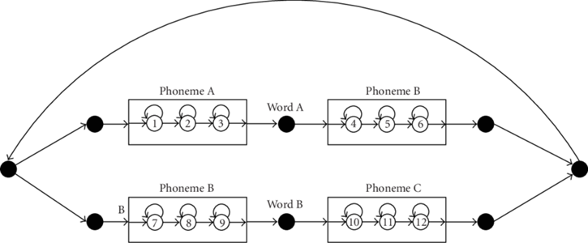
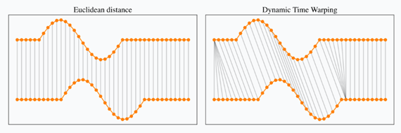
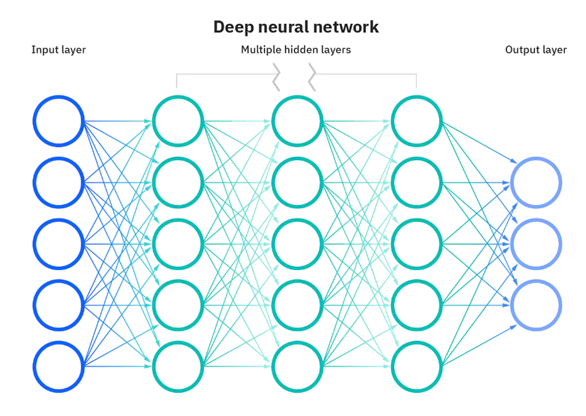

TECHNOLOGY
The Advancement of Speech Recognition Technology: Conversing with Machines
Speech recognition is the process of converting spoken language into text, enabling machines to transcribe human speech. It is utilized in various applications such as virtual assistants, hands-free dictation software, accessibility technology for individuals with disabilities, and language translation. Natural Language Processing (NLP) enhances speech recognition by analyzing grammar, syntax, and contextual information to improve accuracy. Speech recognition is a subset of Artificial Intelligence (AI) and Machine Learning (ML), where AI helps understand the context and meaning of words, while ML enables systems to learn and adapt to different accents and pronunciations, making communication more natural and seamless.
Hidden Markov Models (HMMs) are often used in speech recognition systems to identify specific words or commands, making them suitable for applications like voice-controlled devices. They model speech as a series of phonemes and use the Viterbi algorithm to decode speech signals into text based on the likelihood of observed feature vectors given hidden states.

Dynamic Time Warping (DTW) is another algorithm used for speech recognition, especially in continuous speech recognition systems. It aligns spoken speech signals with reference templates to compute similarity, allowing it to handle variations in speaking rate, intonation, and pronunciation. DTW’s ability to warp the time axis enables it to handle non-linear variations in time or speed, making it effective in various speech-processing applications.

Neural networks offer a modern approach to speech recognition and are capable of recognizing any spoken word, not just predetermined ones. They learn the relationships between speech and text, making them suitable for tasks like dictation systems. Neural networks take audio input, typically in the form of spectrograms or MFCCs, and output sequences of words or characters using multiple layers of artificial neurons to process the input and generate the final output.

Posted: March 23, 2024
Face Recognition
Posted: March 23, 2024

Deep Learning
Posted: March 23, 2024
Eye Recognition
Posted: March 23, 2024

Some sentence about this news article.
Posted: March 14, 2024